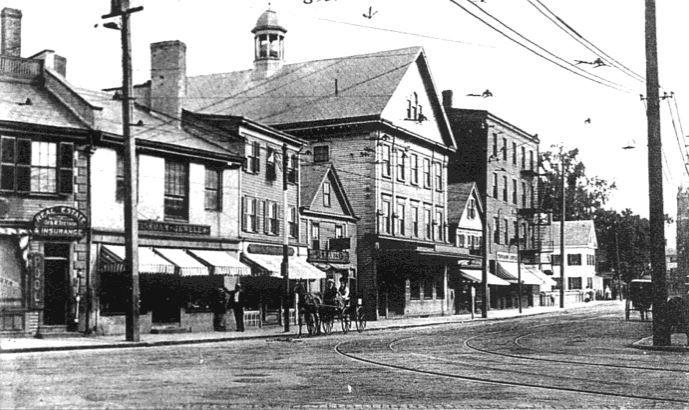

Generations
Modern
Home
Generations ▾
Colonial 1638–1765
The Revolution 1765–1783
19th Century
Modern
People
Places
Collections
Sources
About
The 1979 Newsletter
Note: Pending further work.
Illustrations

Medford Square and station, early 1900s.
Medford Square in the early 1900s; the cupola building at center is the railroad station.
Image: Unknown photographer. Public domain.
Source: Wikimedia Commons